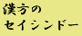

漢方薬の専門！
漢方のセイシンドー 携帯専用サイトです。
Click! 英語サイトはこちら。
English site for mobile
メールで無料漢方相談！
口臭・鼻臭症・膿栓などすごく悩む事なのに病院へ行っても相手にされない･･････。
こんな経験はありませんか？
また、何度も繰り返す、ヘルペス（特に性器ヘルペス）や陰部（性器）の痒み・肛門のかゆみ・膀胱炎・頻尿・めまい・ニキビなど。また、大人まで持ち越した夜尿症や、大人になってから出てきた夜尿症で、相談できずに悩んでいる方。現代医学では、治らない病気や症状でも漢方医学なら良くなる可能性もあります。
あきらめる前に、是非一度ご相談下さい。
もちろん、ご相談は無料です。
なぜ、面倒な相談が必要なのか？
についてはこちらをご覧下さい。
携帯メールからご相談される場合、迷惑メール防止のため、指定されたドメイン以外からのメールの受信を拒否する設定をされていますと、こちらから返信が出来ません。（NTT docomoをご利用されている方）ご相談されるときは、必ずこの設定を無効にするか、受信許可するドメインに「seisindo.com」を追加しておいてください。
臨時休業等がありますので、必ず「お知らせ」をご覧下さい。
パソコンからはこちらをご覧ください。
店頭でのご相談は、完全予約制になっております。必ずご予約の上でお越し下さい
(C) Copyright 2000-2010 Kanpo no SEISINDO. All rights reserved.